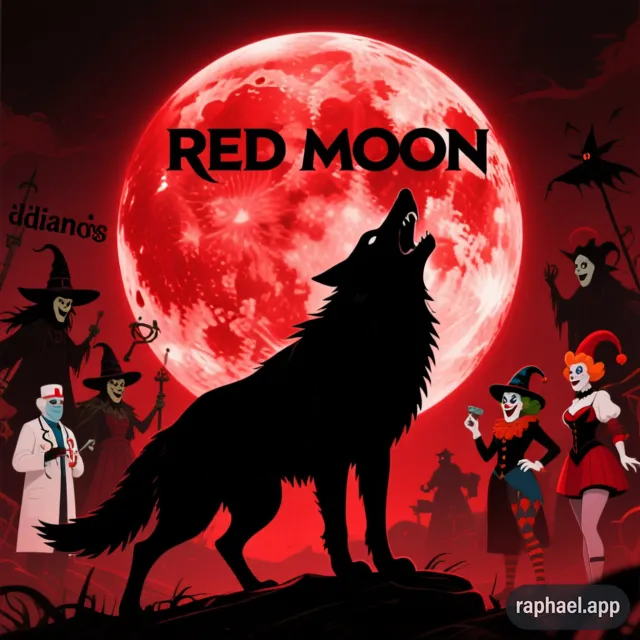

Red Moon
Red Moon is my biggest software project so far: a multiplayer browser game built around hidden roles, deduction and teamwork.
The Project
Players join a private room and receive secret roles such as Wolf, Villager, Seer or Witch. They must work out who the killer is while discussing clues, making decisions and voting as a group.
The goal is to create an accessible and dynamic game that can be played directly in a browser with friends.
Gameplay Systems
-
Rooms and Players
Create a private room, share its code and see connected players in real time.
-
Hidden Roles
Each player receives a private role with different abilities and objectives.
-
Day and Night
Players use role actions, debate and voting to influence each round.
Development and Code
The project is written in JavaScript and organized around the game interface, multiplayer communication and the rules that control each phase of a match. The code repository contains the current source, planning documents and explanations of the roles and point systems.
The project is being developed in stages: first the lobby and room system, then role assignment, game mechanics, the complete interface and finally optimization for a stable release.
What I Am Learning
- Designing multiplayer interactions and real-time game states.
- Breaking a large project into manageable development sprints.
- Building clear interfaces for different players, roles and game phases.
- Improving JavaScript, debugging and collaborative software development skills.